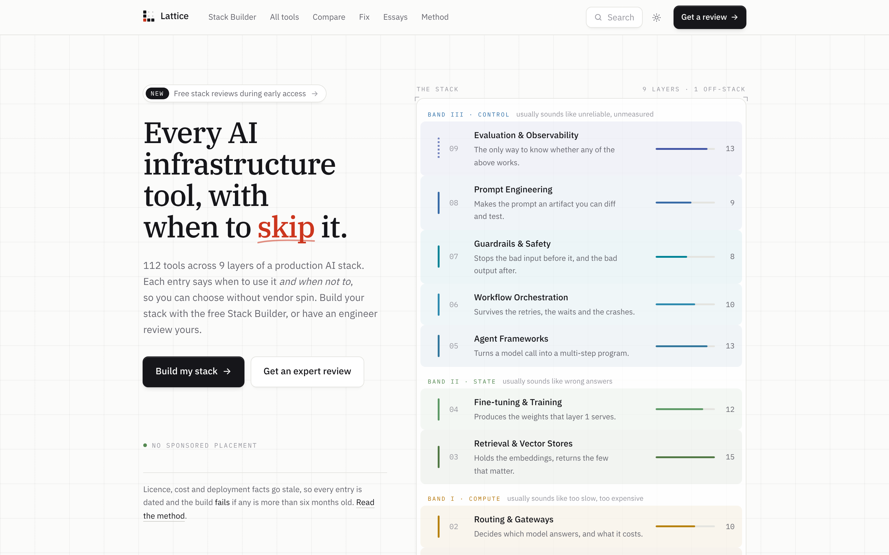
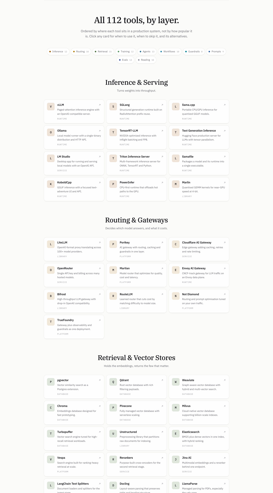
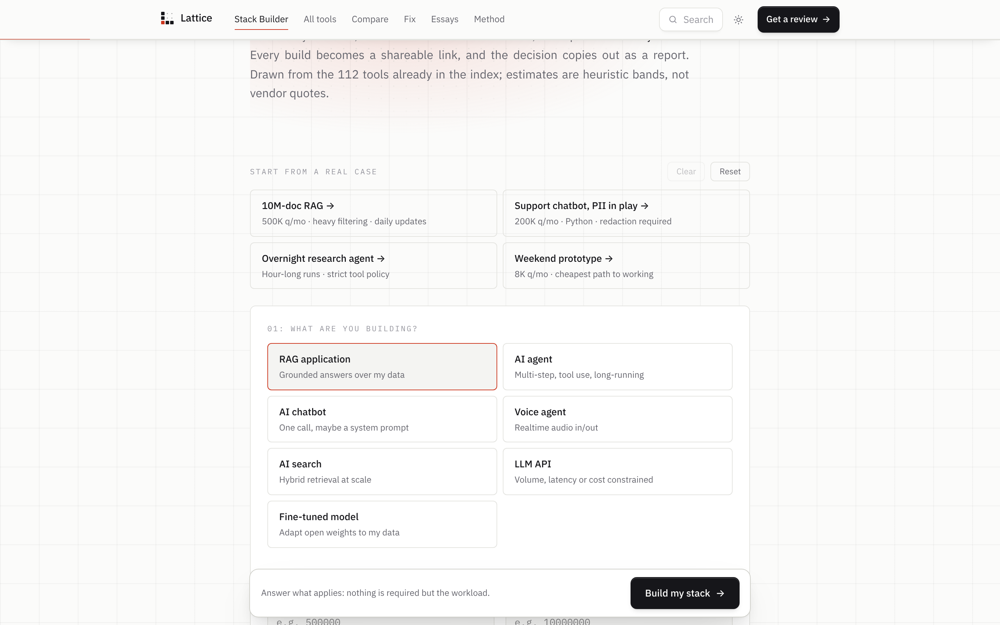
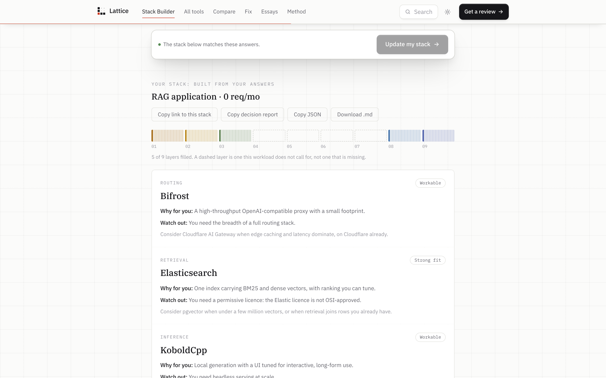
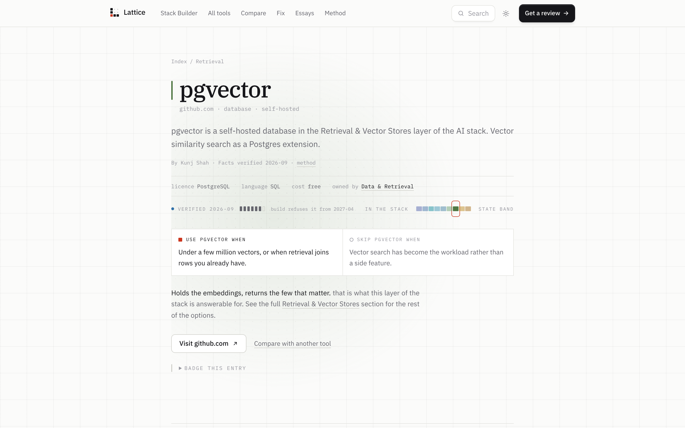
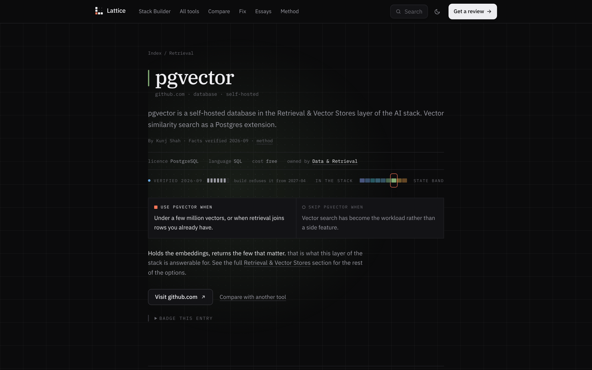
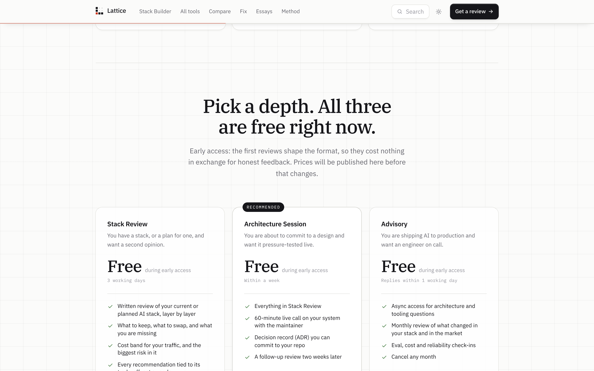

Lattice
The redesign
Every AI infrastructure tool,
with when to skip it.
Rebuilt from the first pixel.
112 tools. One click each.
Describe the workload. Get the stack.
Every tool says when to skip it.
Light. And dark.
Expert stack reviews, on request.







Free during early access
lattice.kunjshah.in
Live now